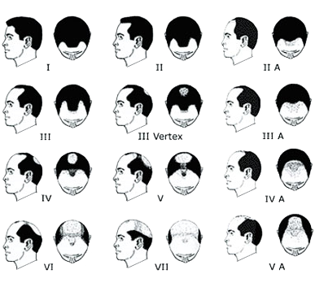
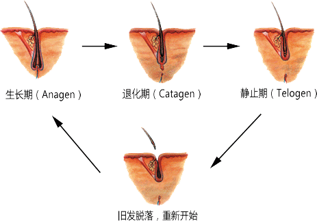

定义为局部脱发，或从地方它通常会生长完全没有头发，这种情况通常影响头皮。原则上，新的增长替代50-150头发， 每天下降。由于头发住在平均五年，小皮脂腺应提供20续费了一生。一些因素的影响，但是，可以与毛细管编程干扰。 当头发开始脱落在捧，人们有理由要问的问题，并咨询医生或皮肤科医生，以确定问题的确切性质。
它影响男性约70％，有时从18岁的出现。它的特点是由起毛取代的头发渐进小型化。虽然脱发是遗传和关注男性为主（如果爸爸是秃顶，儿子可能，太）女性可以也会受到影响。
该基因不从一代自动传播。很可能跳过几代。脱发的这种形式可以被延迟，但仍不可避免的导致这种类型的脱发尚未识别的特定基因。
非常罕见的，这可能是由于要么缺乏发根，或毛干的异常。
这是当大量的头发迅速脱落，下面的巨大压力（离婚，心理创伤，死亡等）。妊娠，手术，全身性疾病，化疗等，都导致头发断电，并在三个月后回落， 如果压力的原因消失，然后可能会停止。
那生完孩子（后六个月内）后出现脱发是将怀孕期间已经丢失一样的头发。这款发型最有可能只剩由于怀孕期间经历激素变化。脱发这种形式被认为是正常的，通常头发三至四个月内长回来完全
除了癌症药物引发显著脱发，对那些胆固醇，粉刺和高血压可以使用在治疗持续时间引起轻度脱发。
这种脱发引起的皮肤损伤等头皮烧伤,皮肤疾病,如红斑狼疮、斑秃, ——当一个长出毛发区域,通常是没有头发是正常的,可能与心理原因。 所有体毛的损失(通用脱发)是罕见的,和再生在这些情况下是可能的, 但不确定。这种脱发是由皮肤损伤头皮上，包括烧伤，皮肤疾病，如红斑狼疮，和斑秃引起的， - 当通常缺乏毛发的毛发轴承区域是正常这可能与心理原因。所有的体毛（通用脱发）的损失是罕见的，再生在这种情况下是可能的，但不确定。

注意:有与更年期有关脱发的一种形式。脱发的这种形式是一个渐进的下降是在雌激素和孕激素，伴随着绝经，并只发生在一个区域的减少的结果。许多妇女经历60岁这个原因后，头发稀疏。
症状包括发或刚毛局部或全身的损失。斑秃可在急性或渐进的方式来体验。
沉闷的头发，头皮发痒，痛苦的根源，多余的皮脂和头皮屑：体征常与脱发有关。
有一些补救措施，以阻止脱发，但资源是相对于再生更多的限制。重要的是要请教专业人士是非常重要的，当头发在枕头上最先出现的症状在早晨出现。

雄激素性脱发达到男性50-70％和白人妇女的40-50％！
三个月内脱发，毛囊开始生发区一个新的增长周期。这将激活新的头发生长。但是，如果DHT（双氢睾酮）的大量存在，这可以在头部，前额和太阳穴冠引起毛囊的萎缩。因此，在生长周期被减小和余地脱发。